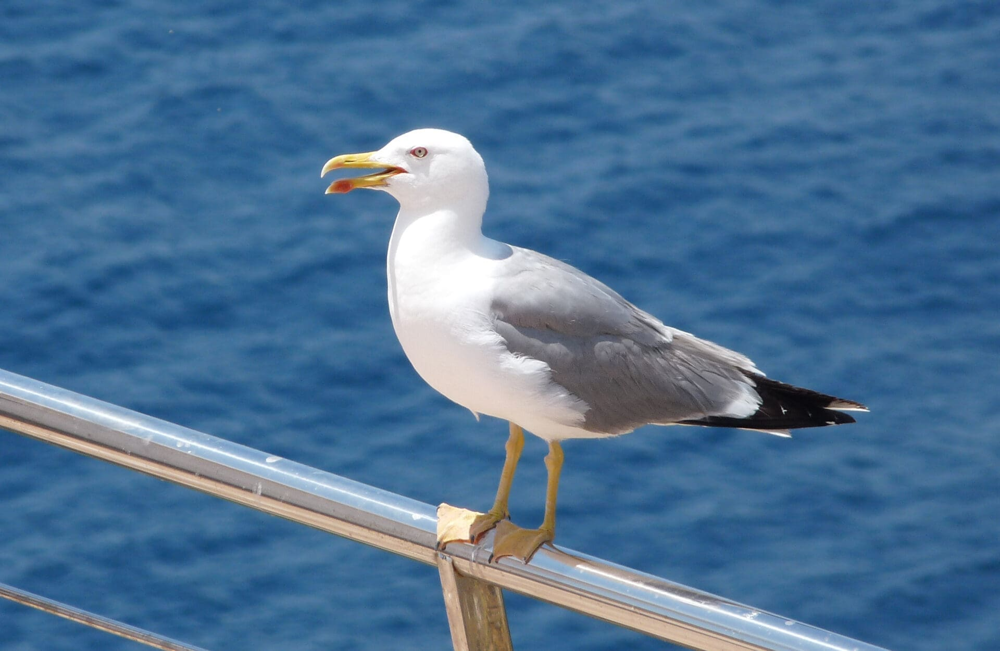

Gaviotas
Las gaviotas son aves marinas inteligentes y adaptables que se encuentran en costas y cuerpos de agua de todo el mundo.
Características principales
- 📏 Tamaño: Entre 25 y 75 cm de longitud.
- ⚖️ Peso: De 120 gramos a 2 kg, según la especie.
- 🛫 Son excelentes voladoras y pueden recorrer largas distancias.
- 🌊 Se encuentran principalmente en zonas costeras, pero algunas especies viven en el interior.
Alimentación
Las gaviotas son omnívoras y oportunistas, alimentándose de peces, crustáceos, insectos e incluso restos de comida dejados por los humanos.
Especies destacadas
- Gaviota argéntea (Larus argentatus)
- Gaviota reidora (Chroicocephalus ridibundus)
- Gaviota tridáctila (Rissa tridactyla)
Curiosidades
¿Sabías que las gaviotas pueden imitar sonidos y usar herramientas? Son aves muy inteligentes y adaptativas.
⬅ Volver a la sección de aves